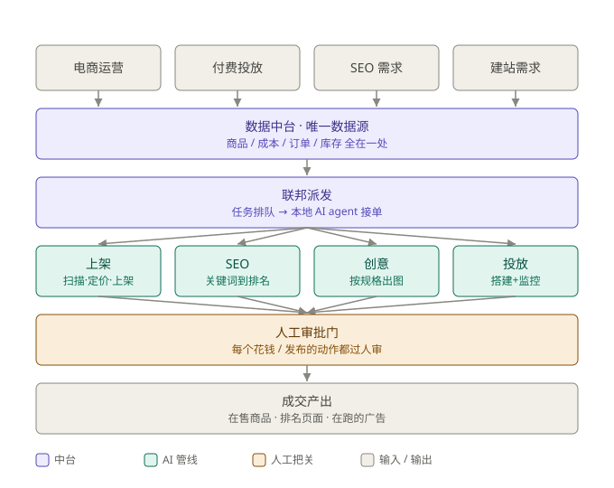

不是 PPT,是我在一个真实多店运营上跑着的系统:选品到上架、关键词到排名、需求到成图、点击到转化。
选品扫描打分,批量上架 Shopify,自动生成标题/描述/类目,按成本底价定价——不会有 SKU 亏本上架。
22 个工具、7 个阶段的工作台:关键词用真实搜索量验证、类目页优化、内容、外链、GBP,且发布需审批。
产品图与广告素材按规格自动生成——白底/场景/细节图,切好所有广告比例,投放不再等设计。
全链路:账户 + GA4 + GTM + GMC 开通、转化追踪、Search/PMax 搭建,再加一块实时看板自动标异常。
你的投放、SEO、建站、电商运营,本质是同一个中台的四个入口。四条管线共用同一份数据,任务派给本地 AI agent 跑;每个花钱、发布的动作先过人工审批门。

以下系统由我作为某澳洲跨境电商集团 GM 兼联合创始人设计交付。客户与内部细节已匿名,架构、规模、做法是真的。